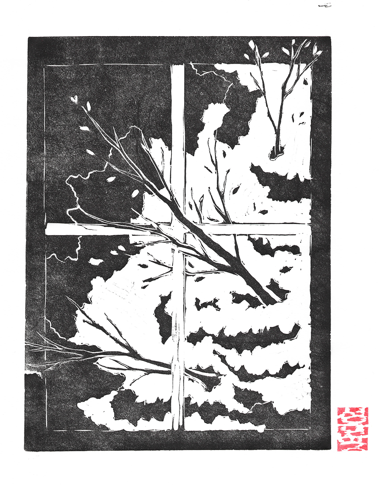
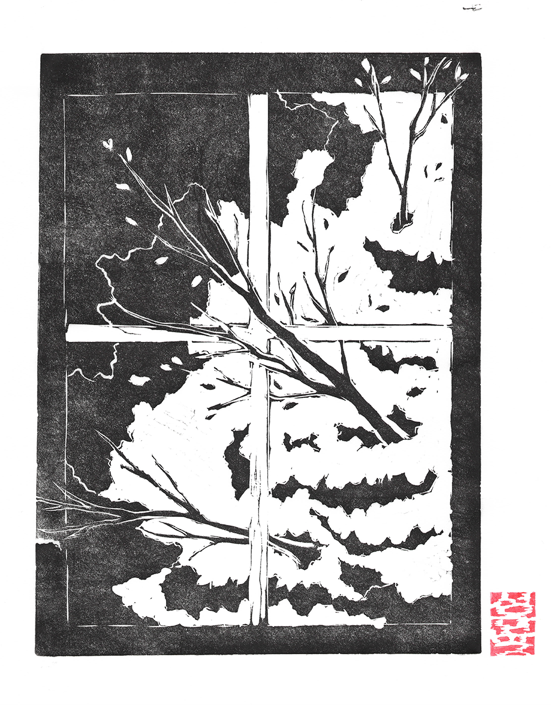

Project 4: Blockprint Studies
This project explores the process of blockprinting. I aim to create prints that showcase texture, and depth in this technique. In particular, my goal was to convey movement and flow in a static medium. Several of the prints reflect scenes from nature.
Medium: linoleum print
Year: 2024
Size: 11 x 13 inches
 
